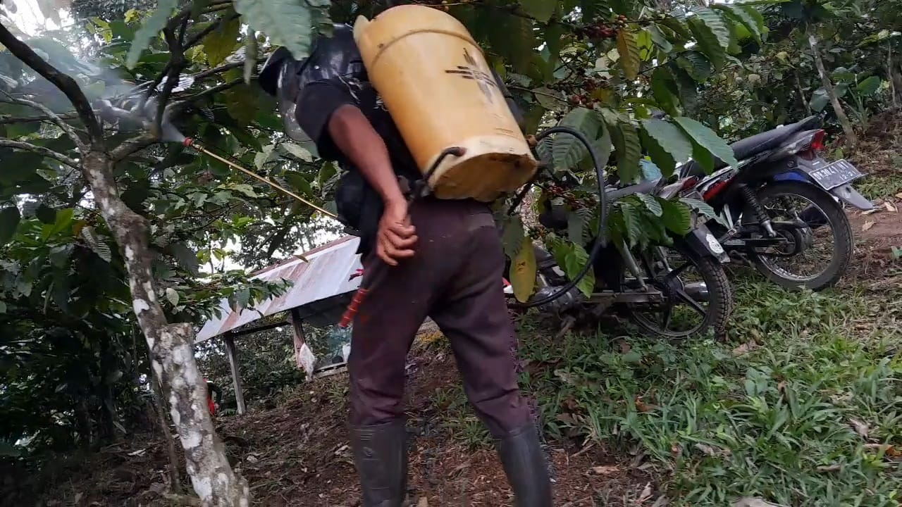
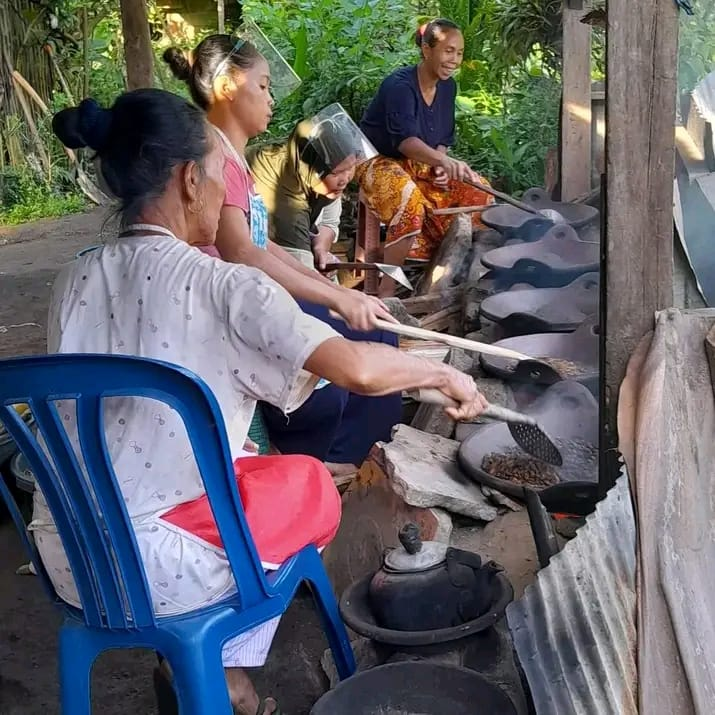
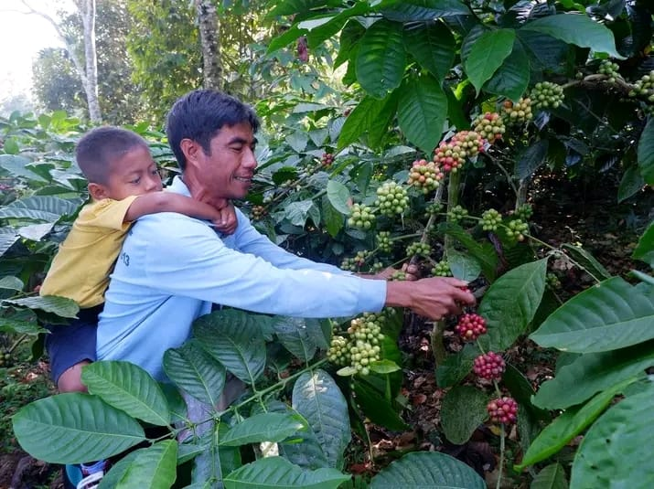

Kebun Kopi di Bukit Mursatas
Kebun kopi kami terletak di Bukit Mursatas, Rempek Darussalam, Lombok Utara. Kopi robusta dihasilkan dengan kualitas terbaik dari perkebunan ini.
Proses Pemeliharaan Pohon Kopi dan Biji Kopi
Pemeliharaan pohon kopi dilakukan dengan teliti, mulai dari pemangkasan hingga pemupukan, untuk memastikan pertumbuhan yang optimal dan biji kopi yang berkualitas tinggi.

Proses Penyangraian Kopi
Proses penyangraian dilakukan dengan cermat untuk menjaga aroma dan cita rasa kopi robusta yang khas.


Proses Pemanenan Kopi
Pemanenan kopi dilakukan secara hati-hati untuk memastikan hanya buah kopi yang matang sempurna yang dipetik, menjaga kualitas dan rasa kopi yang dihasilkan.